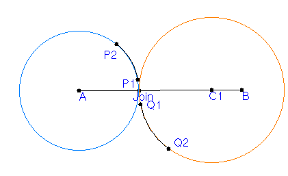
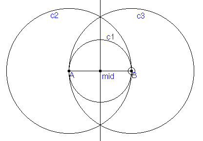
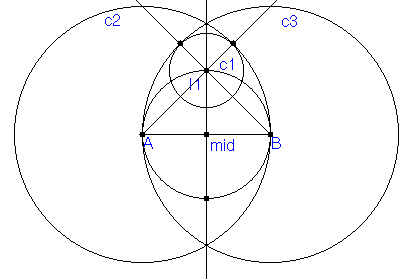
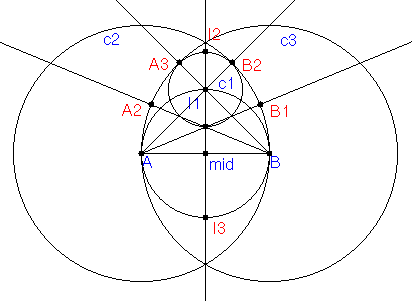
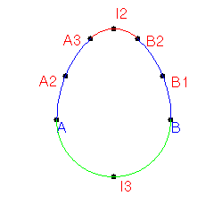

1. An oval can be constructed by joining together
several circular arcs of varying radii. The join point must look "smooth",
that is there must be no bend or noticeable kink in the joined curve at
the join point. In his book Mathographics(Dover Publications,
1987) Robert Dixon describes a technique for joining
circular arcs that was known to the 15th century artist Albrecht Durer.
Durer used this technique to design an alphabet suitable for the printing
press.
The main idea used in Durer's technique
of joining arcs of different radii is that the join will be smooth (i.e.
the tangent lines will line up) if a straight line drawn through the centers
of the two arcs passes through the point where they join. For example,
in the figure below we have placed two points (Join and C1) on the segment
AB and then constructed two circles: one with center A and radius point
Join and the other with center C1 and radius point Join. Now, we attach
two points (P1, P2) to the first circle and two points (Q1, Q2) to the
second and construct the arcs on these sets of points. (The arcs are in
black) If we move P1 and Q1 to the join point we will have connected two
arcs of different radii, but the joined curve will be smooth at the intersection
point.

2. How can we use this to make an oval, or more precisely an egg shape? What we will do is join together 4 arcs to make the egg. First, construct segment AB, the midpoint of AB, a perpendicular to AB at the midpoint, circle c1 with center the midpoint of AB and radius point B, circle c2 with center B and radius A, and circle c3 with center A and radius B. Note that the bottom half of circle c1 will join smoothly to arcs on c2 and c3 originating from B or A.

3. Next we will construct a small circle near the top of the construction with center at the intersection of the perpendicular and c1. Find this intersection point I1 and then construct two rays from B through I1 and from A through I1. Find the intersections of these rays with circles c2 and c3. Finally, construct a circle with center I1 and radius point an intersection point of a ray with c2 or c3. In the figure below you should be able to identify the shape of an egg by four circular arcs.

4. Next, find the intersection point I2 of the top circle with center I1 and the perpendicular to AB. Then, construct two rays: one through A and the bottom intersection of the top circle and the perpendicular to AB, and the other though B and this bottom intersection point. Then, find the intersections of these rays with c2 and c3. The points in red, plus A and B, will define four arcs which will make up our egg.

5. To finish off the construction, hide all objects except A, B, and the points in red. Then, construct and arc on points A3, I2, and B2. Finally, construct the arcs in blue and green to finish off the construction of an "egg."
